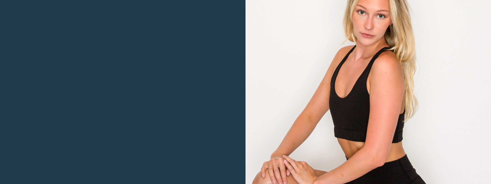

Brand Book · 2026
Natural fiber, plainly made.
The brand argument, the naming system, the voice, and the apparel line — a short book for everyone who writes, designs, promotes, or sells for PuraKai.
Live Pure. Wear Pure.
Made by Nature since 2012 · 10 miles of LA · GOTS fiber · PFAS-free tested
Contents
Read it in order once, then use it as a reference.
01 — 02
The Brand
The mission, the thesis, and the customer we speak to.
03 — 04
The System
The core contrast, the two fabric families, and the supply chain.
05 — 06
The Apparel & Voice
The line as sold today, fabric care, and the lines we don’t cross.

The Mission
Built on transparency, environmental stewardship, and an enduring love for our ocean playground.
1% of sales donated since 2012
Ocean conservation
Clean water access
Education for underserved communities
Source: purakai.com/pages/our-story
01 · The Brand
Natural fiber, close to the source.
PuraKai makes natural-fiber activewear and basics. Every body-fabric garment is GOTS-certified organic cotton, third-party tested PFAS-free, and knit, cut, sewn, and dyed within a 10-mile radius in Los Angeles.
The cotton is grown and spun in India, where GOTS supply-chain infrastructure exists — then finished in LA, where US labor and environmental law takes over.
The brand exists to move people from petroleum-based fabrics to natural ones. The argument is functional, not lifestyle — and every name, every line of copy carries it.
The customer we speak to
They eat clean. They train clean. They read labels. Then they spend sixteen hours a day in plastic.
Frame PuraKai as the completion of a lifestyle the customer already lives — never a new habit to adopt.
02 · The Core Contrast
Synthetic vs. natural, honestly told.
Synthetic fabric
Organic cotton · PuraKai
Breathability
Traps heat and moisture against skin.
Breathes — releases heat as you move and rest.
Chemistry
Can carry PFAS and petroleum residues.
Third-party tested PFAS-free.
End of life
Sheds microplastics every wash.
Biodegrades where it’s organic cotton.
Wear over time
Pills, stretches out, thins.
Softens with wear.
Composition
Always a blend, rarely disclosed plainly.
100% organic cotton (Pure) · 92% organic cotton / 8% spandex (PureFlex).
Honest footnote — satin labels and waistband elastic are not cotton. We never claim “plastic-free” or “zero microplastics.” Dramatically more plant, dramatically less petroleum, than anything else on the rack.
Honest footnote
Satin labels and waistband elastic are not cotton. We never claim “plastic-free” or “zero microplastics.” Dramatically more plant, dramatically less petroleum, than anything else on the rack.
03 · The Naming System
Two families. One word.
Family name first, silhouette last: [Pure or PureFlex] + [optional modifier] + [silhouette] — as in PureFlex High-Waist Legging.
Pure.
100% organic cotton · GOTS fiber · no spandex
Tees, tanks, lounge, joggers, tank dresses.
“Pure organic cotton. No blend. No compromise.”
PureFlex.
92% organic cotton · 8% spandex · replaces “EcoFlex 2.0”
Leggings, shorts, bras, camis, racers, compression. Two constructions: 12.5 oz double-lined tops, 14.8 oz single-layer bottoms.
“The only stretch activewear that’s still mostly plant, not petroleum.”
Every product name threads back through “Pure” to PuraKai itself — Pura means pure. Each rename makes the clean-living story clearer by one degree.
03 · The Supply Chain
From soil to seam.
GROWN & SPUN
India.
GOTS-certified organic cotton, grown and spun where the certified supply-chain infrastructure exists.
KNIT, CUT, SEWN, DYED
10 miles of LA.
Finished within a 10-mile radius in Los Angeles, where US labor and environmental law applies. Garment-dyed and pre-shrunk.
THE PILOT
All American Project.
Texas-grown organic cotton, made in North Carolina, South Carolina, and Georgia — a 1,350-mile chain from seed to clothing.
Say “10 miles in LA” as supply-chain shorthand — never an unqualified “Made in USA.”
04 · The Apparel — Pure
Pure Basics.
100% GOTS-certified organic cotton · no spandex
Classic Fit Tee
The foundational crew neck, cut for all-day wear. $44
All-Day Crop Tee
Cropped to hit at the natural waist. $44
Fleece Lightweight Joggers
Relaxed cotton fleece, four colors. $79
Lightweight Joggers
Breathable relaxed fit in Sand Dune and Driftwood Grey. $79
Texas-Grown Tank Dress
From the All American Project: US-grown cotton. $59
Texas-Grown Raglan Tee
Long-sleeve raglan in US-grown cotton. $42
04 · The Apparel — PureFlex
Leggings, Shorts & Joggers.
92% organic cotton · 8% spandex · non-sheer
High Waist Leggings
The flagship, in seven colors. $75
Pocket Leggings
The same fit, with side pockets. $82
Bootcut Leggings
An open flare, studio to street. $78
Capri Leggings
Cropped length for warm days. $69
Mid-Rise Leggings
A lower rise, same stretch. $72
High Waist Shorts
Stays put through movement. $55
Pocket Shorts
Pockets for the essentials. $62
EcoLuxe Joggers
A tapered performance jogger. $79
04 · The Apparel — PureFlex
Bras, Camis & Tops.
Double-lined · light-to-medium support
Racerback Sports Bra
A second-skin fit with free shoulders. $62
High Neck Racerback Bra
More coverage with the same stretch. $64
Reversible Pivot Top
Fully reversible: two looks in one. $55
Cami Crop Top
Layer it or wear it alone, in four colors. $58
Athleisure Shirt
Relaxed fit; the one top in 100% organic cotton. $52
04 · The Apparel — Care
Fabric care.
General natural-fiber guidance — the care label always wins
Wash cold.
Machine wash cold on a gentle cycle, inside out, with like colors.
Skip the chemicals.
No bleach, no fabric softener — the fiber softens on its own with wear.
Dry low.
Line dry or tumble dry low. Garment dyeing means every piece is already pre-shrunk.
Check the label.
Each garment carries its own care instructions — the label is the source of truth.
End of life
Pure body fabric is biodegradable natural fiber — it begins and ends in the soil. PureFlex is 92% biodegradable; the spandex portion is not. Worn-out garments make good rags before they make compost.
05 · Voice & Guard Rails
The two words travel together.
Say
100% organic cotton (Pure)
GOTS-certified organic cotton
Mostly organic cotton (PureFlex)
Organic cotton tee / jogger / legging
Never
100% cotton
Pure cotton
Cotton tee / jogger / legging
“Cotton” as a shorthand noun
Voice
Lead with function — breathes, lives, stays pure — not lifestyle.
Name the contrast directly: microplastics, PFAS, heat trap, petroleum.
“10 miles in LA” as supply-chain shorthand — not “Made in USA.”
Never borrow from other languages or cultures.
05 · Voice & Guard Rails
Claims we can and can’t make.
We can say
Made from GOTS-certified organic cotton — certified at the fiber stage.
Third-party tested PFAS-free (EPA-certified lab).
Knit, cut, sewn, and dyed within a 10-mile radius in Los Angeles.
Biodegradable natural fiber (Pure) · dramatically reduced microplastic shedding (PureFlex).
We can’t say
“100% natural” for PureFlex — the spandex is synthetic.
“Zero microplastics” for PureFlex — the spandex portion still sheds.
“Plastic-free” for Pure — labels and waistband elastic aren’t cotton.
“Made in USA” unqualified — specify the 10-mile finishing footprint.
06 · Logo Assets
Grab the mark.
Export size
px wide
Sets the pixel width of every Copy and Download below — the previews don't change.
{{ logo.label }}
transparent PNG · {{ logo.dims }}
{{ logo.msg }}
All four cut from the same 2400px transparent master. Black on light backgrounds, white on dark; no outlines, recolors, or effects.

Made by Nature since 2012.
Everything in this book works only if the garment works. Write like the fabric — plain, functional, close to the source.
Live Pure. Wear Pure.
purakai.com · @purakai